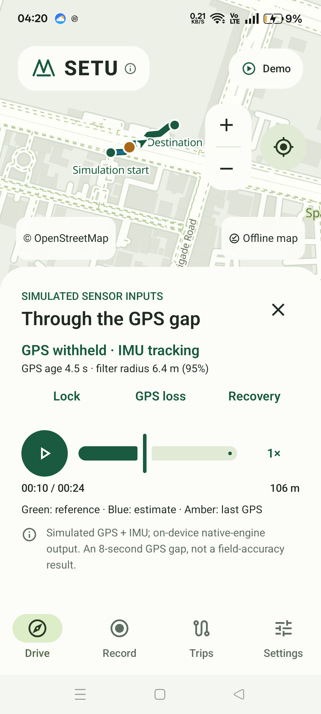

A map that stays with you.
Search destinations and plan routes within the installed Delhi & NCR coverage. Follow GPS guidance without a mobile-data connection once the map pack is ready.
India. Himachal Pradesh. Beyond the signal.
Follow the map to Atal Tunnel. Then step through the mist and see what happens when the signal disappears.
Preparing 3D. Reference photograph shown while the landscape loads.
Locating the tunnel on the map of India…
Map: Natural Earth · Location: OpenStreetMap · Scene references & credits
A journey beyond the signal
Follow a car into a tunnel. See how motion sensors can carry an estimate forward—and how returning GPS helps correct accumulated drift.
Interactive concept, not a performance claim. Synthetic sensors and a simplified browser estimator. This does not run the Android app or its AI model.
Loading 3D… The map and controls work while it loads.
Satellite fixes anchor the position before the tunnel.
Illustrative sensors, not the Android app or measured accuracy.
The landscape and south portal are photo-referenced to Atal Tunnel; the 30-second route compresses and illustrates a journey, not the real tunnel’s 9.02 km length. The blue marker is the estimate. Synthetic acceleration and gyro readings drive it without GPS fixes inside the tunnel. Distances, timing and uncertainty are illustrative, not supported outage durations for the APK. Geography, references & asset credits.
Offline maps. Motion sensing. Android.
Find a route on Delhi & NCR maps stored on your phone. Record GPS and motion together. Understand what happens between satellite fixes—not just where the journey ends.
Built for testing, not navigation you should rely on.
GPS-free accuracy is still under development.

Useful before, during and after the ride
Search destinations and plan routes within the installed Delhi & NCR coverage. Follow GPS guidance without a mobile-data connection once the map pack is ready.
Capture GPS, accelerometer and gyroscope readings on a shared timeline. See tracking status and sensor diagnostics. Keep SETU visible while recording: background sensor gaps remain in this beta.
Save and revisit trips. Export a training bundle with raw measurements, aligned summaries and quality flags—only when you choose to share it.
The right activity matters. Car, Two-wheeler and Walking profiles keep different movement assumptions separate. Selecting a profile does not certify its GPS-free accuracy.
Try the mechanism first. A built-in curved-route demo illustrates sensor estimation through GPS loss and recovery. It is clearly simulated, not a recorded accuracy result.
The problem we are working on
A tunnel, a dense city street or a lost connection can interrupt different parts of a journey. They are not the same failure.
Installed maps and local recordings do not need mobile data. GPS can still provide a position with Location on and a usable satellite signal.
The map is still there, but a fresh position is harder. SETU explores using calibrated phone motion sensors to bridge short gaps. Heading, mounting and sensor drift limit what can be trusted.
SETU can withhold an estimate and show that position is unavailable or stale. It must not animate you along a planned route and call that measured movement. Current GPS-free performance is experimental, not dependable navigation.
Inside SETU
The phone does the recording and local estimation. A separate evaluation pipeline asks the harder question: was the estimate actually right?
GPS fixes and available motion sensors use a shared monotonic clock. Full-rate raw measurements stay in private, recoverable trip files.
A native inertial filter combines motion with accepted GPS fixes. Heading, activity and uncertainty gates decide whether an estimate is usable.
Replay hides GPS from a separate estimator after warmup. Saved GPS stays outside that estimator for comparison; missing outputs are counted.
Explicit exports feed quality screening and whole-ride data splits. A candidate must pass calibration, replay and device gates before navigation can use it.
Where the map fits: offline maps and a local road graph support display, search and route planning. A planned route is not independent proof of your position.
The Android app includes local TFLite inference. The bundled speed model is evaluation-only and is not approved for navigation fusion. Training happens on a workstation, not silently on your phone. More data helps only when labels, activity, mounts and held-out evaluation are sound.
A different focus
SETU brings navigation, motion recording and inspectable evaluation into one workflow.
That is our focus—not a claim that SETU is more accurate than established navigation apps. No head-to-head superiority has been demonstrated.
Evidence before promises
Our target is at least 90% of GPS-free position updates within 10 metres. Missing estimates count as failures. That target is not yet demonstrated.
The tunnel above explains a concept, not a measured result. Each Android download needs its own evidence; an earlier build’s test results do not certify a new APK.
Loading the latest verification…
| GPS gap | Verified within 10 m | Available / expected |
|---|
Same-phone GPS is a comparison reference, not independent surveyed ground truth. Percentages divide verified successes by every expected update; missing references remain unknown. A tested duration is not a supported tracking duration.
Rows use different outage start times and counts; they are not a like-for-like duration comparison. See this build’s report for matched trials and limitations.
Available now · Development beta
Android 8 or newer. Delhi & NCR offline maps are included—not whole-India coverage—so the APK is a substantial download. Your recordings stay on the phone unless you choose to export them.
This is a development build. Keep SETU visible while recording. Use a trusted navigation app for real journeys. Do not handle your phone while riding or driving.
Checking the current APK…
Checking this APK’s file-verification evidence. Artifact checks do not certify navigation accuracy.
Your browser may flag a development APK as uncommon. Check the SHA-256 and install only files from sources you trust; do not disable device-wide protections.
See exact verification details ↗APK SHA-256 · Compare this with your downloaded file.
Not available yet
Help shape the next kilometre
You don’t need a perfect route. We need an honest record of what happened.
Explore the implementation, ask a technical question or share a reproducible finding. If you contribute a recording, tell us the phone, activity, mount position and whether it changed.
Discuss SETU on GitHubGPS logs can reveal your home and routine. Do not attach raw location recordings to a public issue. Ask the team for a private handoff first. This website has no recording-upload form.
This site uses Vercel Web Analytics for aggregate page-view statistics when enabled on our deployment. It does not use analytics cookies, request GPS access or send Android recordings. We remove query strings and fragments from tracked page URLs and skip analytics when your browser sends Do Not Track or Global Privacy Control. No custom click or download events are sent. How Vercel processes analytics data